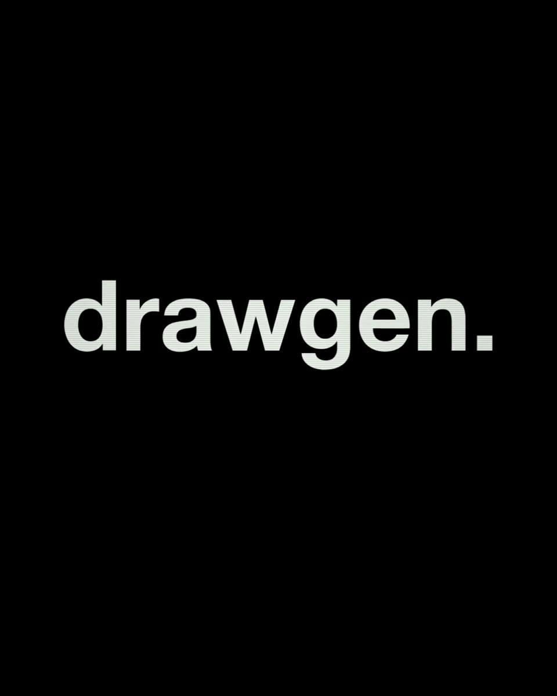

For manufacturers who build to order
Quotes built on data, not memory.
drawgen connects the systems your data already lives in, so every quote is faster to send and priced on what similar jobs actually cost.
Illustrative example
Starting price
€19,800
- Estimate saved to the job
- RFQ packages ready
- Record updated
Vision
Manufacturing has evolved. The systems behind it haven't.
Your data already exists. It sits in the CAD model, the ERP, past quotes and one or two people's heads. drawgen connects it, so every quote is faster to send and priced on what similar jobs actually cost.
The drawgen vision, 0:23
On screen in the video
- Manufacturing has evolved.
- The systems behind it should too.
- Less friction.
- More flow.
- drawgen.
- Manufacturing // reimagined

The drawgen record
One record per part, across every system you run.
What you paid is in your ERP. What you quoted is in your CRM. What the part actually is sits in the CAD model. The drawgen record joins them, so a price you paid last year attaches to the same part in the job you are quoting now. Nobody types anything in.
The drawgen recordIllustrative example
-
CAD modelWhat the part actually is
BP_600x400_rev2.sldprt
S355, 600 × 400 × 15, 28.3 kg
-
ERPWhat you paid
10-4471
Last paid €410, Supplier A
-
CRMWhat you quoted
PLATE BASE 600X400
Quoted in 3 past jobs
The drawgen record
Base plate
- Shape
- S355, 600 × 400 × 15, 28.3 kg
- Paid
- Last paid €410, Supplier A
- Quoted
- Quoted in 3 past jobs
One record per part, joined on the part's shape rather than its number, so it works even when part numbers are a mess.
McKinsey names a lack of spending transparency as the first of five things holding back procurement at mid-size firms.
Four products
Built on the drawgen record
Product What it costs you, and why now
Time
2 weeks
of real work, in a three-and-a-half-month order at a German machine builder. The rest was questions, clarification and waiting.
In 2023, Fraunhofer studied the quote process at a German special machine builder. Prices in Excel, quotes rebuilt from old ones in Word, and colleagues asked for every cost and delivery date.
Margin
−40% to +70%
In a study of tool and die making, quoted cost against actual cost ran from minus 40% to plus 70%. Different trade, same one-off, engineering-led work.
Knowledge
The same in every market
The person who knows what a job really costs is retiring faster than they are replaced.
- UK: 55,000 manufacturing vacancies unfilled. Make UK, 2025 (opens in a new tab)
- US: up to 1.9 million manufacturing jobs unfilled by 2033. Deloitte and The Manufacturing Institute, 2024 (opens in a new tab)
- Australia: about 70,000 engineers retiring this decade. Engineers Australia, 2026 (opens in a new tab)
- Germany: 178,000 short by 2034. IW Köln for the Impuls-Stiftung, 2024 (opens in a new tab)
Speed
Years to months
Chinese manufacturers have compressed development cycles from years to months while staying 20 to 30% cheaper.
- Your CAD files never leave your machine
- Nothing estimated, anything unclear flagged
- Everything editable, nothing sent unchecked
- Built for manufacturers who build to order
Built for your industry
What McKinsey calls low-volume, high-complexity manufacturing: machines built in ones and tens, not thousands.
- A one-off automated assembly machine in an aluminium profile frame, half built on the floor of a machine builder, with machined parts laid out on the bench beside it. Special-purpose machinery Every machine is a one-off. The quote should not be a guess.
- A long roller conveyor with steel box-section side frames and a gear motor, with cut profiles and bearing units stacked behind it. Material handling and conveyors Frames and profiles, measured off the model, not re-measured.
- A stainless case-packing machine under final assembly, guard doors open, pneumatic cylinders and an infeed conveyor with cardboard cases. Packaging machinery Packaging lines priced on your history, not your memory.
- A robotic cell being commissioned: a six-axis robot with a parallel gripper over a welded fixture table, inside mesh safety fencing. Automation and robotic cells A BOM that is right the first time, bought-out and custom.
- Primed wide-flange steel beams and a large welded platform frame with thick base plates, resting on timber blocks in a fabrication shop. Heavy fabrication and steel Big steel, measured off the model, not with a tape.
- A steel lifting beam hanging from a chain hoist on a pillar jib crane, with test weights on the floor below. Lifting equipment Quoted with the engineering in it, not discovered after.


Built to give your team time back, not to replace anyone.
It takes the repetitive work off your engineers and estimators: the measuring, the retyping, the chasing. The judgement stays with them: tolerances, datums, what to quote and who to buy from. Everything it produces is editable, and nothing goes out until your people have checked it.
Show us one of your jobs.
The fastest way to see whether this works for you is to try it on something real.
Talk to us